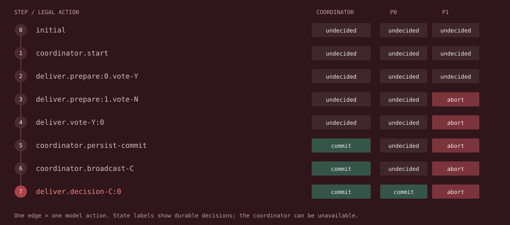
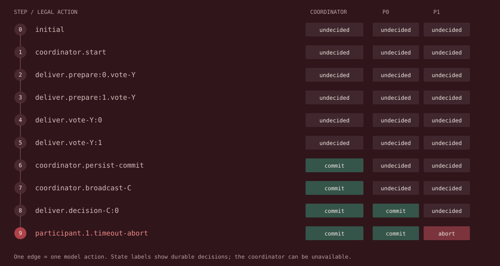
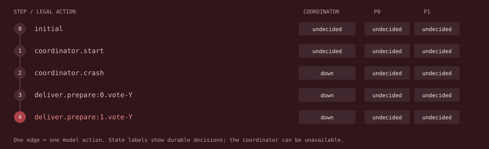

Transaction protocol model checker
Explore bounded two-phase commit state spaces and replay the shortest failures of two intentionally unsafe variants.
| Model | States | Edges | Status | Agreement / validity violations |
|---|---|---|---|---|
| correct-2p | 76 | 137 | complete | 0 / 0 |
| correct-2p-faults | 11,814 | 48,784 | complete | 0 / 0 |
| correct-3p | 684 | 2,033 | complete | 0 / 0 |
| partial-vote-commit | 124 | 233 | complete | 8 / 30 |
| prepared-timeout-abort | 127 | 263 | complete | 4 / 0 |
Each state space is finite and explicitly bounded. Completing these searches verifies the modeled safety predicates within those bounds; it is not an unbounded proof or an experiment on a real cluster.
Agreement and validity counts are unique violating states. Durable monotonicity is checked on every traversed edge, with zero violations in all five runs. Raw counts and elapsed times · Full search summaries
Durable state and message delivery
Coordinator
Starts one transaction, receives votes, persists one final decision, then broadcasts it. A crash erases the received-vote cache and send flag. The final decision survives. Recovery resends PREPARE if undecided, or resends its durable decision.
Participants
Choose YES or NO on their first PREPARE. YES persists a prepared vote. NO persists an abort. A commit is accepted only after durable YES; a final decision cannot be overwritten. Duplicate PREPARE resends the original vote.
Network
An unordered multiset permits arbitrary delivery order. Bounded loss removes a message; bounded duplication adds a copy. Messages already in flight survive coordinator crashes, but votes cannot be delivered to an unavailable coordinator.
Canonicalization
Message ordering is sorted before state identity is computed. Multiplicity, participant identities, durable state, volatile state, and consumed fault budgets remain part of the key. No participant-symmetry or partial-order reduction is applied.
| Property | Independent predicate |
|---|---|
| Atomic agreement | No participant has committed while another has aborted. |
| Commit validity | A coordinator or participant commit requires every durable participant vote to be YES. |
| Durable monotonicity | A persisted decision or participant vote cannot change on a transition. |
No acknowledgements, participant crashes, storage corruption, coordinator election, multiple transactions, clocks, or fairness assumptions. Source: transitions · independent invariant predicates · complete model specification
Commit after a partial vote
This mutant permits a commit as soon as any YES vote reaches the coordinator. The shortest validity failure takes 4 actions. The shortest trace that leaves participants with different final outcomes takes 7 actions:

P1 has durably voted NO, but that vote is still in flight when the coordinator commits. P0 then accepts the commit, producing the visible split outcome.
Replayable JSON · Human-readable steps · DOT source · Four-action validity witness
Prepared participant timeout abort
This mutant allows a prepared participant to abort without a coordinator decision. The shortest disagreement needs 9 actions; no message loss or crash is required. “Timeout” is a nondeterministic local action, not an elapsed clock duration.

The commit message for P1 remains in flight. Its autonomous abort cannot later be overwritten without violating durable monotonicity. Replayable JSON · Human-readable steps · DOT source
Blocking while the coordinator is unavailable
A four-action trace leaves both participants prepared while the undecided coordinator is down. Neither participant may safely decide locally under this model. Transport loss or duplication cannot create the missing decision.

Conditional blocking
Recovery remains an enabled transition. This witness is not a global deadlock. It shows that participant completion depends on coordinator availability in the modeled protocol.
No liveness proof
The search does not assume fair delivery, eventual recovery, or eventual retries. Dropped messages can also stall this finite one-broadcast model. Terminal-state counts are not completion counts.
Completed exploration within explicit bounds
| Scenario | Participants | Loss / duplicate / crash budget | Peak messages / derived bound | Peak pending states | Max depth |
|---|---|---|---|---|---|
| correct-2p | 2 | 0 / 0 / 0 | 3 / 4 | 17 | 9 |
| correct-2p-faults | 2 | 1 / 1 / 1 | 6 / 7 | 2,386 | 16 |
| correct-3p | 3 | 0 / 0 / 0 | 5 / 6 | 160 | 12 |
| partial-vote-commit | 2 | 0 / 0 / 0 | 3 / 4 | 31 | 9 |
| prepared-timeout-abort | 2 | 0 / 0 / 0 | 3 / 4 | 25 | 11 |
Every run expanded every discovered state and ended with an empty frontier. The 100,000-state resource guard was never reached. Exceeding it returns incomplete-state-limit, preserves a nonempty frontier count, and makes the batch command fail.
Derived message bound
Without a crash: at most 2N + D messages. With one crash: at most 3N + D. A delivered PREPARE replaces itself with one vote; loss only decreases the bag. The checker asserts this structural bound instead of pruning overflowing states.
Shortest means fewest model actions
Breadth-first search saves each state's first predecessor. Witness lengths count atomic transition actions; they do not measure time or network latency. A separate shallow execution-tree test checks the four-action validity minimum.
npm ci --ignore-scripts npm run typecheck npm test npm run check -- --output results-local npm run replay -- results-local/traces/prepared-timeout-abort-atomic-agreement.json
Node v24.20.0; measured 2026-11-20T23:30:14.181Z. Search elapsed time is local diagnostic data, not a performance benchmark. Environment and LF-normalized source hashes · Reproduction and limits · Screenshots · Review recording